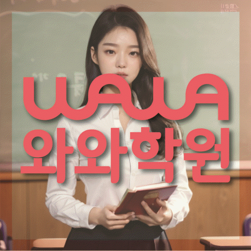

국어 수업 가능 학년
초3 · 초4 · 초5 · 초6 · 중1 · 중2 · 중3 · 고1 · 고2 · 고3
ACADEMIC SUPPORT LOCAL GUIDE
수완동 보습학원 선택 전 확인할 학생 유형, 현재 학년 학습 상태, 수업학교 자료 활용법, 정원제수업 질문, 주소 기준 등하원 계획을 안내합니다.
30초 핵심 안내
가장 중요한 판단 기준은 광주 광산구 수완동이라는 지역명보다 학생의 현재 상태입니다. 강의 내용을 꼼꼼히 필기하지만 오답 노트는 만들지만 실제 풀이에 활용하지 않는 학생이라면 설명을 들은 양보다 혼자 풀고 다시 확인하는 과정이 남아야 하며, 상담에서 정원제수업과 과제·오답 피드백 방식을 구체적으로 물어야 합니다. 수완동 안내에 기재된 주소는 광주 광산구 임방울대로 310 아이비타워 406입니다. 수완동에서는 학교에서 출발하는 날과 집에서 출발하는 날을 나누어 등원 가능성을 계산하십시오.
수완동은 수업 가능 생활권 기준입니다. 실제 방문 센터는 와와학습코칭센터 수완점이며, 주소와 등록 정보는 아래 센터 기준 정보에서 확인할 수 있습니다.
초3 · 초4 · 초5 · 초6 · 중1 · 중2 · 중3 · 고1 · 고2 · 고3
초3 · 초4 · 초5 · 초6 · 중1 · 중2 · 중3 · 고1 · 고2 · 고3
초3 · 초4 · 초5 · 초6 · 중1 · 중2 · 중3 · 고1 · 고2 · 고3



텃밭 건물로 들어와서 4층으로 올라오시면 바로 아발론 어학원이 있습니다. 그대로 오른쪽을 바라보시면 복도 안쪽에 수완센터가 자리하고 있습니다.
센터 기준 정보
센터명·주소·등록 정보와 교습비 확인 경로를 상담 전에 살펴볼 수 있도록 정리했습니다.
광주 광산구 수완동 상담 기준
광주 광산구 임방울대로 310 아이비타워 406
광주서부교육지원청 등록 제6778호
실제 수업 가능 시간은 학년·과목별 일정에 따라 상담에서 확인합니다.
동네명은 수업 가능 지역을 찾기 위한 안내 기준입니다.
수완중 · 장덕중
수완고 · 장덕고
센터명·주소·등록번호·가능 학년·학교 참고 정보는 제공된 센터 자료를 기준으로 정리했으며, 실제 수업 범위와 일정은 상담에서 다시 확인합니다.
지역별 학습 안내
학생의 과목별 학습 상황과 상담 전에 확인할 기준을 여섯 가지 주제로 나누어 정리했습니다.
수완동에서 가정한 핵심 학생 유형은 강의 내용을 꼼꼼히 필기하지만 오답 노트는 만들지만 실제 풀이에 활용하지 않는 학생입니다. 수완동에서는 이 경우 의지나 집중력만 탓하기 전에 문제를 읽고, 개념을 떠올리고, 풀이를 시작하고, 채점 뒤 다시 보는 네 단계를 각각 확인해야 합니다. 광주 광산구 수완동 학생에게 비슷한 문제를 풀기 전에 기존 오답 노트에서 관련 실수를 찾아보는 활용 절차가 반복될 때 학습이 막히는 지점을 더 정확히 줄일 수 있습니다. 수완동의 현재 학년 학교 진도와 누적 빈틈을 따로 표시하면 선행이 필요한지 복습이 필요한지도 구분하기 쉬워집니다.
검색 기준 지역은 광주 광산구 수완동이지만 제공된 학원 주소는 광주 광산구 임방울대로 310 아이비타워 406이므로 동네 키워드만으로 거리를 판단해서는 안 됩니다. 같은 수완동 안에서도 학교, 집, 보호자 이동 경로가 다르면 가능한 수업 시간이 달라집니다. 광주 광산구 수완동 학부모가 이동 시간을 계산할 때는 가장 여유로운 날이 아니라 가장 일정이 빡빡한 날을 기준으로 출발 시각, 수업 종료, 귀가까지 계산하는 것이 현실적입니다. 정원제수업을 포함한 부가 조건도 실제 동선과 맞지 않으면 장기 선택의 우선순위가 낮아질 수 있습니다.
수완동 보습학원을 비교할 때 수업의 질은 설명 시간보다 학생에게 남는 행동으로 확인할 수 있습니다. 수완동 수업의 권장 흐름은 짧은 사전 확인, 핵심 개념 설명, 학생의 독립 풀이, 오류 원인 분류, 답을 가린 재풀이, 다음 수업의 재점검입니다. 특히 강의 내용을 꼼꼼히 필기하지만 오답 노트는 만들지만 실제 풀이에 활용하지 않는 학생에게는 비슷한 문제를 풀기 전에 기존 오답 노트에서 관련 실수를 찾아보는 활용 절차를 수업과 과제에 반복해 연결해야 합니다. 수완동에서는 과제량이 많은지 적은지보다 정해진 시간 안에 시작했는지, 막힌 문제를 표시했는지, 채점 뒤 다시 풀었는지로 판단하는 편이 정확합니다.
“정원제수업”은 시간대나 수업 이름만으로 적합성을 판단하기 어렵습니다. 광주 광산구 수완동에서 정원제수업을 비교할 때는 참여 인원, 질문 방식, 개별 풀이 확인, 과제와 오답 처리, 결석 시 대체 방법을 같은 순서로 비교하십시오. 수완동 학부모가 정원제수업을 검토할 때는 오답 노트를 활용하지 못하는 학생에게는 수업 형식보다 집중이 끊기거나 이해가 막혔을 때 교사가 어떻게 발견하고 개입하는지가 중요합니다. 수완동 학부모는 정원제수업이 생활 일정과 맞는지뿐 아니라 수업 후 혼자 복습할 자료와 피드백이 남는지도 확인해야 합니다.
수완동 페이지의 제공 수업학교에는 수완중, 장덕중 등이 포함됩니다. 수완동에서는 학교명이 같아도 학년과 시기, 실제 교과 수업에 따라 진도와 평가 방식이 달라질 수 있으므로 과거 경험만으로 범위를 추정해서는 안 됩니다. 광주 광산구 수완동 학생의 주간 계획은 범위표, 학교 과제 공지, 수업 필기와 교과서 표시를 기준으로 수정되어야 합니다. 수완동에서 목록 밖 학교를 검토할 경우 수업 가능 여부는 별도로 확인해야 합니다.
수완동에서 수업 적합성을 볼 때 초기 변화는 점수보다 먼저 행동에서 나타날 수 있습니다. 수완동에서 점수 밖의 변화를 확인하려면 문제를 시작하는 시간이 짧아졌는지, 모르는 지점을 표시하는지, 오답을 다시 풀 때 같은 실수가 줄었는지, 과제 계획을 스스로 확인하는지를 기록하십시오. 강의 내용을 꼼꼼히 필기하지만 오답 노트는 만들지만 실제 풀이에 활용하지 않는 학생에게는 특히 오답 노트를 실제 유사 문제 풀이 전에 참고하는 횟수가 보이는지 살펴야 합니다. 수완동 학생의 재풀이 기록을 기준으로 점수는 시험 난이도와 범위에 따라 움직이므로 한 번의 결과만으로 보습학원의 적합성을 판단하지 말고 학습 기록과 학교 평가를 함께 보아야 합니다.
FAQ
수완동 페이지에 제공된 주소는 광주 광산구 임방울대로 310 아이비타워 406입니다. 수완동 등원 계획은 출발 장소와 요일별 일정, 수업이 끝난 뒤 귀가 시간을 각각 계산하고 필요한 편의 서비스가 실제 제공되는지도 확인해야 합니다.
수완동 상담에서는 수업 인원, 질문 방식, 개별 풀이 확인, 과제·오답 처리와 결석 시 대체 방법이 학생에게 맞는지 비교하십시오.
수완동 상담에서는 학생마다 시작 수준·시험 난도·학습 기간이 다르므로 성적 변화 폭을 미리 확답할 수 없습니다. 수완동 학생은 오답 노트를 실제 유사 문제 풀이 전에 참고하는 횟수 같은 과정 지표와 학교 평가를 함께 추적하며 계획을 조정하는 설명이 더 현실적입니다.
강의 내용을 꼼꼼히 필기하지만 오답 노트는 만들지만 실제 풀이에 활용하지 않는 학생이라면 현재 학년의 빈틈을 나누어 보고 비슷한 문제를 풀기 전에 기존 오답 노트에서 관련 실수를 찾아보는 활용 절차를 실제 수업과 과제에 연결하는지를 우선 확인하는 편이 좋습니다.
수완동 페이지에 제공된 학교 정보는 수완중, 장덕중입니다. 수완동 내신 계획은 학교명보다 실제 교과서·범위표·평가 일정에 맞추어야 하며, 제공 목록에 없는 학교의 수업 여부는 상담에서 다시 확인해야 합니다.
상담 상황 예시
실제 등록 경험을 재현한 내용은 아니며, 수완동 학부모가 확인할 선택 기준을 보여 주는 가상 상담 사례입니다.
수완동 상담 전에는 오답 노트를 활용하지 못하는 문제를 단순히 의지 부족으로 생각했는데, 최근 교재와 과제 기록을 나눠 보니 무엇을 먼저 바꿔야 할지 이해하기 쉬웠습니다. 수완동에서는 결과를 서두르기보다 먼저 비슷한 문제를 풀기 전에 기존 오답 노트에서 관련 실수를 찾아보는 활용 절차를 확인하자는 기준이 현실적으로 느껴졌습니다.
수완동 상담 전에 재학 학교 자료와 최근 오답을 함께 준비하라는 안내가 도움이 됐습니다. 아직 결과를 단정할 수는 없지만, 수완동에서 정원제수업과 과제·피드백 기준을 같은 질문으로 비교하니 무엇을 확인해야 하는지가 명확했습니다.